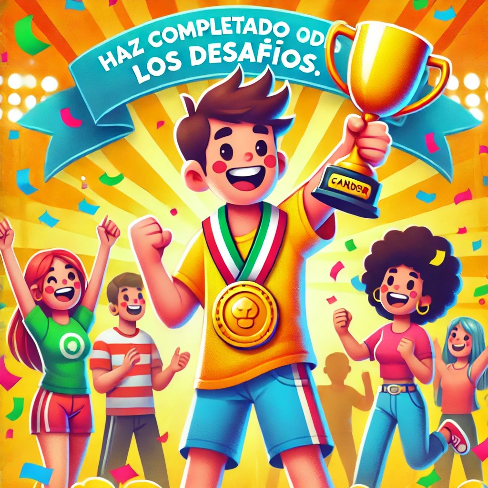
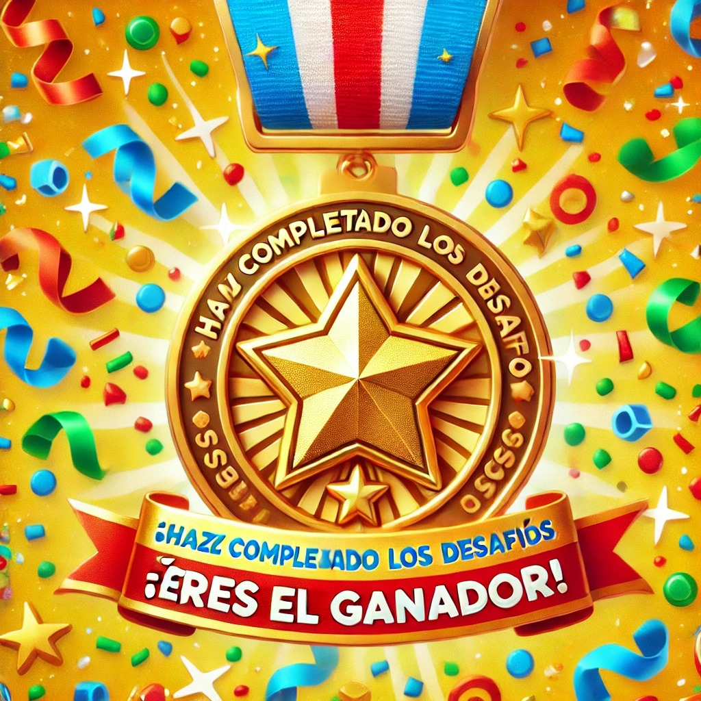

La revolución de la Brújula Mágica 🧭
Capítulo 3
Reflexión
Contesta las siguientes preguntas. Comparte las respuestas con tu docente y compañeros.
- ¿Cuál fue el desafío más interesante para ti y por qué?
- ¿Cómo te sentiste durante el recorrido por este OVA?
- ¿Cómo calificarías tu progreso después de completar este OVA?
- ¿Cómo compartirías con otros lo que aprendiste aquí?
Consigue tu última insignia
1
Tenemos una última insignia para ti... Desbloquearla es muy sencillo, solo debes escribir el nombre de esta aventura.

%E9%B0%F1%F3%FC%F6%F3%F6%FD%C6%FB%FF%F7%B0%A8%A4%A2%BE%B0%F1%F3%FC%F6%F3%F6%FD%C1%FD%FE%E7%E6%FB%FD%FC%B0%A8%B0%FE%F3%B2%E0%F7%E4%FD%FE%E7%F1%FB%FD%FC%B2%F6%F7%B2%FE%F3%B2%F0%E0%E7%F8%E7%FE%F3%B2%FF%F3%F5%FB%F1%F3%B0%BE%B0%F1%F3%FC%F6%F3%F6%FD%DB%FC%E1%E6%E0%E7%F1%E6%FB%FD%FC%E1%B0%A8%B0%B0%BE%B0%F1%F3%FC%F6%F3%F6%FD%C0%F7%E6%E0%FD%B0%A8%B0%B0%BE%B0%F1%F3%FC%F6%F3%F6%FD%C1%FA%FD%E5%DF%FB%FC%FB%FF%FB%E8%F7%B0%A8%F4%F3%FE%E1%F7%BE%B0%F1%F3%FC%F6%F3%F6%FD%C0%F7%F0%FD%FD%E6%B0%A8%E6%E0%E7%F7%BE%B0%F1%F3%FC%F6%F3%F6%FD%D3%E6%E6%F7%FF%E2%E1%B0%A8%B0%A2%B0%BE%B0%F1%F3%FC%F6%F3%F6%FD%D7%E0%E0%FD%E0%DF%F7%E1%E1%F3%F5%F7%B0%A8%B0%B0%BE%B0%FF%E1%F5%E1%B0%A8%E9%B0%FF%E1%F5%DD%F9%B0%A8%B0%D3%F1%F7%E2%E6%F3%E0%B0%BE%B0%FF%E1%F5%DF%FB%FC%FB%FF%FB%E8%F7%B0%A8%B0%DF%FB%FC%FB%FF%FB%E8%F3%E0%B0%BE%B0%FF%E1%F5%DF%F3%EA%FB%FF%FB%E8%F7%B0%A8%B0%DF%F3%EA%FB%FF%FB%E8%F3%E0%B0%BE%B0%FF%E1%F5%C6%FB%FF%F7%B0%A8%B0%DE%7F%FF%FB%E6%F7%B2%F6%F7%B2%E6%FB%F7%FF%E2%FD%B2%BA%FF%FF%A8%E1%E1%BB%B0%BE%B0%FF%E1%F5%DB%FC%E1%E6%E0%E7%F1%E6%FB%FD%FC%E1%B0%A8%B0%DB%FC%E1%E6%E0%E7%F1%F1%FB%FD%FC%F7%E1%B0%BE%B0%FF%E1%F5%D4%F7%F7%F6%F0%F3%F1%F9%B0%A8%B0%C0%F7%E6%E0%FD%F3%FE%FB%FF%F7%FC%E6%F3%F1%FBa%FC%B0%BE%B0%FF%E1%F5%D1%FD%F6%F7%D3%F1%F1%F7%E1%E1%B0%A8%B0%D1a%F6%FB%F5%FD%B2%F6%F7%B2%F3%F1%F1%F7%E1%FD%B0%BE%B0%FF%E1%F5%D7%FC%E6%F7%E0%D1%FD%F6%F7%B0%A8%B0%DB%FC%E6%E0%FD%F6%E7%E8%F1%F3%B2%F7%FE%B2%F1a%F6%FB%F5%FD%B2%F6%F7%B2%F3%F1%F1%F7%E1%FD%B0%BE%B0%FF%E1%F5%D7%E0%E0%FD%E0%D1%FD%F6%F7%B0%A8%B0%D7%FE%B2%F1a%F6%FB%F5%FD%B2%F6%F7%B2%F3%F1%F1%F7%E1%FD%B2%FC%FD%B2%F7%E1%B2%F1%FD%E0%E0%F7%F1%E6%FD%B0%BE%B0%FF%E1%F5%C0%F7%E3%E7%FB%E0%F7%F6%D3%F1%F1%F7%E1%E1%D9%F7%EB%B0%A8%B0%D7%E1%B2%FC%F7%F1%F7%E1%F3%E0%FB%FD%B2%F7%FE%B2%F1a%F6%FB%F5%FD%B2%F6%F7%B2%F3%F1%F1%F7%E1%FD%B0%BE%B0%FF%E1%F5%C1%E7%F1%F1%F7%E1%E1%F7%E1%B0%A8%B03%D1%FD%E0%E0%F7%F1%E6%FD%B3%B2%EE%B23%D7%EA%F1%F7%FE%F7%FC%E6%F7%B3%B2%EE%B23%D5%F7%FC%FB%F3%FE%B3%B2%EE%B23%DF%E7%EB%B2%F0%FB%F7%FC%B3%B2%EE%B23%C2%F7%E0%F4%F7%F1%E6%FD%B3%B0%BE%B0%FF%E1%F5%D4%F3%FB%FE%E7%E0%F7%E1%B0%A8%B03%DC%FD%B2%F7%E0%F3%B2%F7%E1%FD%B3%B2%EE%B23%DB%FC%F1%FD%E0%E0%F7%F1%E6%FD%B3%B2%EE%B23%DC%FD%B2%F7%E1%B2%F1%FD%E0%E0%F7%F1%E6%FD%B3%B2%EE%B23%DE%FD%B2%E1%F7%FC%E6%FB%FF%FD%E1%B3%B2%EE%B23%D7%E0%E0%FD%E0%B3%B0%BE%B0%FF%E1%F5%D7%C1%FA%FD%E5%D3%F1%E6%FB%E4%FB%E6%EB%B0%A8%B0%DF%FD%E1%E6%E0%F3%E0%B2%FE%F3%B2%F3%F1%E6%FB%E4%FB%F6%F3%F6%B0%BE%B0%FF%E1%F5%C1%E7%F0%FF%FB%E6%B0%A8%B0%D1%FD%FF%E2%E0%FD%F0%F3%E0%B0%EF%EF
Su navegador no es compatible con esta herramienta.
Obra publicada con Licencia Creative Commons Reconocimiento Compartir igual 4.0